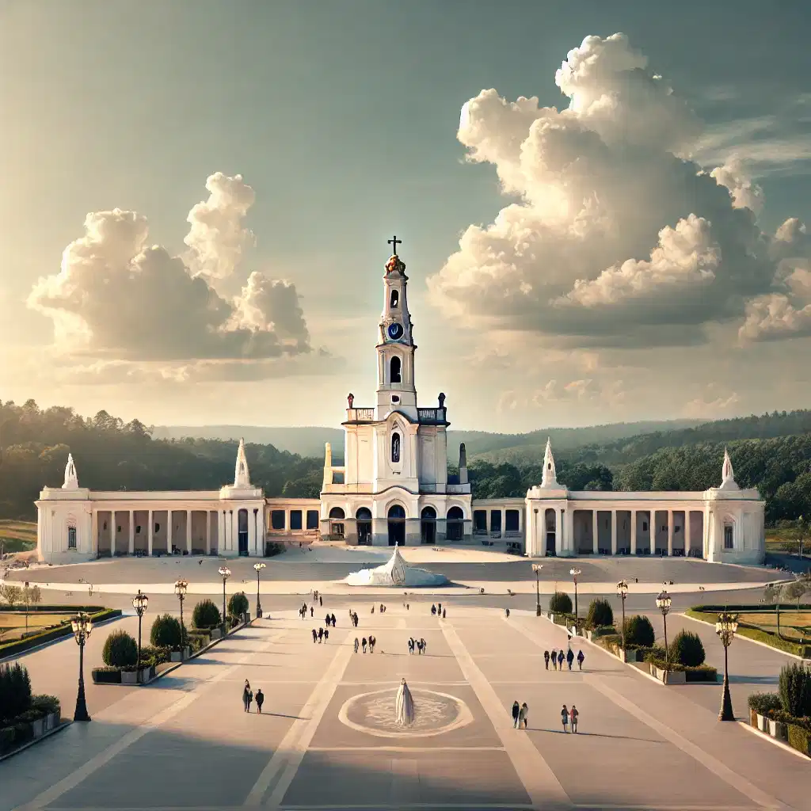
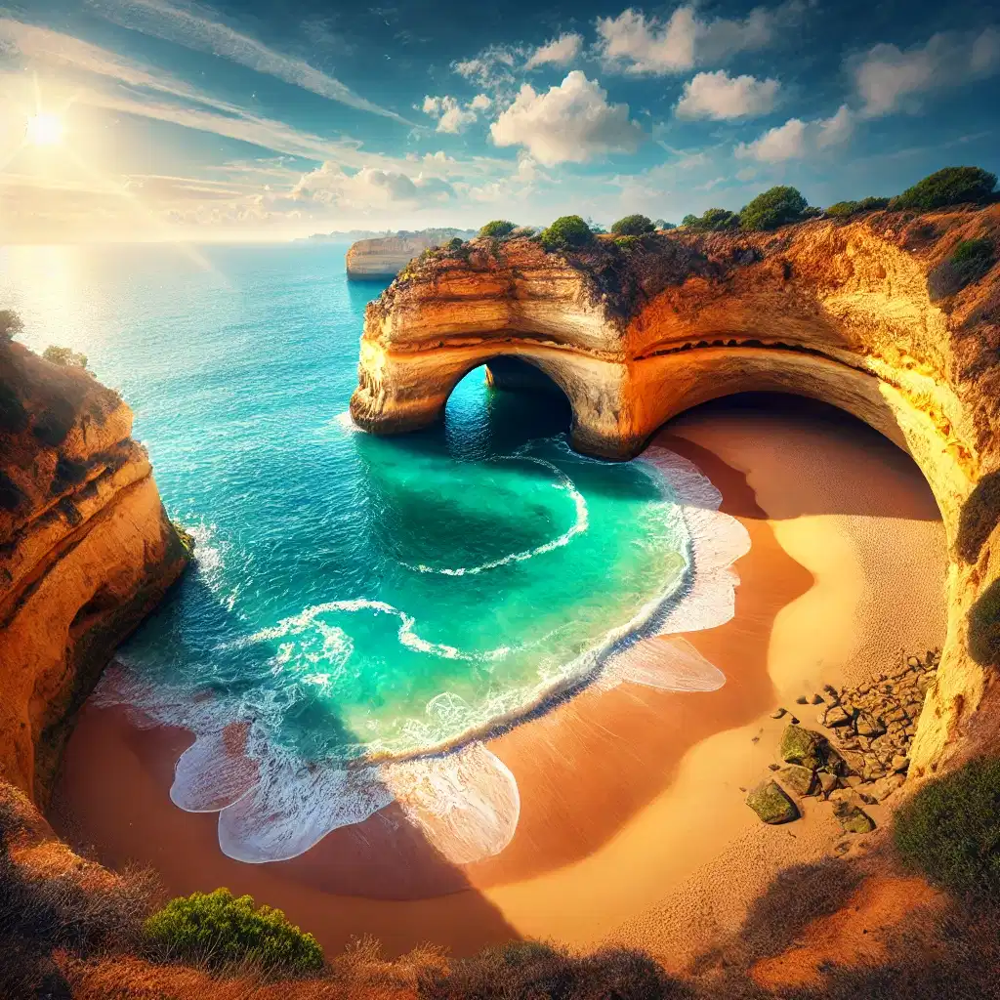

Torre de Belém
Un ícono histórico de Lisboa, situado a orillas del río Tajo y testigo de la era de los descubrimientos.
Construida en el siglo XVI, esta fortaleza refleja la arquitectura manuelina. Es Patrimonio de la Humanidad y un símbolo de la época de las exploraciones portuguesas.
Saber más
Puente Dom Luís I
Una impresionante obra de ingeniería que conecta Oporto con Vila Nova de Gaia, famosa por sus vistas al Duero.
Diseñado por un discípulo de Gustave Eiffel, este puente metálico es una maravilla arquitectónica y un lugar ideal para disfrutar del atardecer sobre el río.
Palacio da Pena
Un colorido palacio situado en lo alto de las colinas de Sintra, rodeado de frondosos jardines.
Este monumento romántico del siglo XIX es un icono nacional, combinando estilos arquitectónicos y ofreciendo vistas impresionantes de Sintra y el Atlántico.

Santuario de Fátima
Un importante lugar de peregrinación católica, conocido por sus apariciones marianas.
Millones de fieles visitan cada año este santuario en honor a la Virgen de Fátima, especialmente el 13 de mayo y octubre, días de las apariciones.

Castillo de Óbidos
Una encantadora fortaleza medieval rodeada por pintorescas calles adoquinadas.
Este castillo del siglo XII es ahora una posada histórica y ofrece una experiencia única de la época medieval, con festivales y mercados temáticos.

Playa de Benagil
Famosa por su cueva marítima con un impresionante techo abierto al cielo.
Ubicada en el Algarve, esta playa es un destino popular para excursiones en kayak y barco, permitiendo explorar sus formaciones rocosas únicas.
Universidad de Coímbra
Una de las universidades más antiguas de Europa, llena de historia y tradición académica.
Fundada en 1290, su biblioteca Joanina es una obra maestra del barroco y un testimonio de la riqueza cultural de Portugal.
Ribeira de Oporto
Un barrio pintoresco lleno de vida, restaurantes y vistas al río Duero.
Con sus casas coloridas y calles estrechas, la Ribeira es Patrimonio de la Humanidad y el alma vibrante de Oporto.
Cabo da Roca
El punto más occidental de Europa continental, con impresionantes vistas al Atlántico.
Con su faro icónico y acantilados escarpados, Cabo da Roca es un lugar imperdible para los amantes de la naturaleza y la fotografía.

Parque Nacional de Peneda-Gerês
El único parque nacional de Portugal, lleno de biodiversidad y paisajes espectaculares.
Este paraíso natural alberga cascadas, senderos y una rica fauna, ofreciendo actividades como senderismo y observación de aves.

Isla de Madeira
Un paraíso subtropical conocido como el "Jardín del Atlántico".
Famosa por su vino, paisajes volcánicos y exuberante vegetación, Madeira es un destino ideal para el ecoturismo y la relajación.
Playa de Nazaré
Famosa por sus olas gigantes y competiciones de surf internacionales.
Además de su atractivo para surfistas, Nazaré es un pueblo encantador con una rica cultura pesquera y deliciosa gastronomía.

Monasterio de los Jerónimos
Un imponente monasterio manuelino y Patrimonio de la Humanidad.
Construido en el siglo XVI, este monumento simboliza la era de los descubrimientos y alberga los restos de Vasco da Gama.
Castillo de Guimarães
Conocido como la cuna de Portugal, lleno de historia medieval.
Este castillo del siglo X fue crucial en la fundación de Portugal y es un lugar emblemático en la historia del país.
Torre de Clérigos
Un ícono arquitectónico de Oporto con vistas panorámicas de la ciudad.
Construida en el siglo XVIII, esta torre barroca ofrece una experiencia única al ascender sus 225 escalones.

Palacio de Queluz
Un elegante palacio rococó con magníficos jardines.
Considerado el "Versalles portugués", este palacio fue residencia real y alberga impresionantes decoraciones interiores.

Catedral de Évora
Una impresionante catedral gótica y Patrimonio de la Humanidad.
Su construcción comenzó en el siglo XIII y combina estilos gótico y románico, destacando su imponente cúpula.

Convento de Cristo
Un monasterio histórico con una arquitectura única y rica historia templaria.
Este complejo, Patrimonio de la Humanidad, fue el cuartel general de los Caballeros Templarios en Portugal.
Aldea de Monsanto
Famosa por sus casas de granito construidas entre gigantescas rocas.
Apodada la "Aldea Más Portuguesa", Monsanto es un lugar fascinante que mezcla arquitectura y naturaleza.
Playa de Marinha
Una de las playas más hermosas del Algarve, conocida por sus aguas cristalinas y acantilados.
Reconocida internacionalmente, esta playa es ideal para snorkel, fotografía y relajación en un entorno paradisíaco.